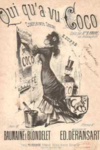

Gabrielle Chanel's early life

Having learned the art of sewing during her six years at Aubazine, Chanel was able to find employment as a seamstress. She sang in a cabaret frequented by cavalry officers. It was at this time that Gabrielle acquired the name "Coco", possibly based on a popular song "Qui qu'a vu Coco".
http://www.youtube.com/watch?v=mGhwcodklwY&list=UU85A9V7X6YXaBGPQkl6riSQ&index=7

The nickname Coco also stand for an allusion to the French word Cocotte, which means for kept woman. As cafe entertainer, Chanel radiated a juvenile allure that tantalized the military habitués of the cabaret.
This is where she meets her first supporter, friend and lover, Etienne Balsan.